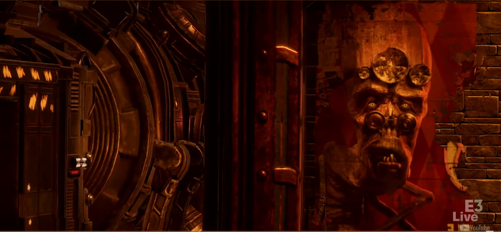
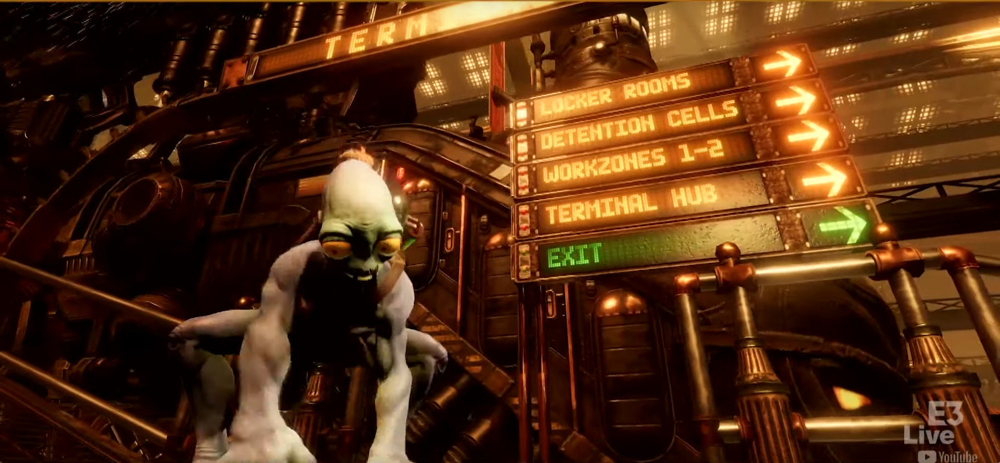
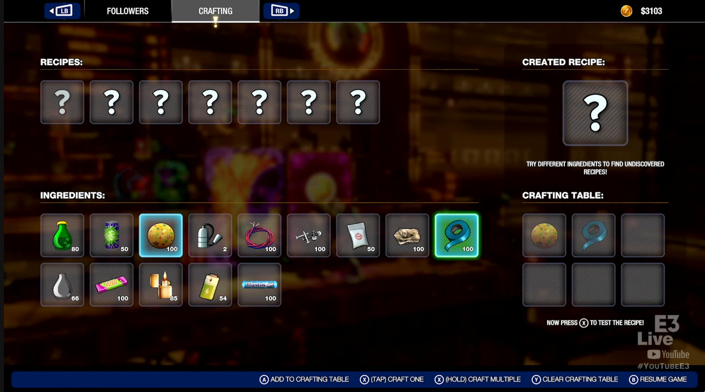
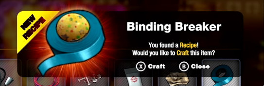
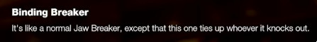
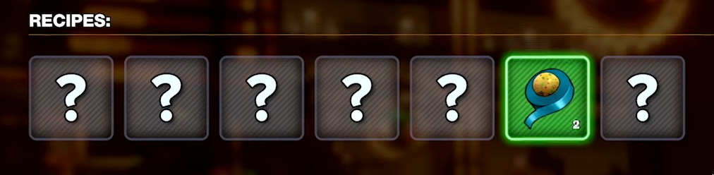
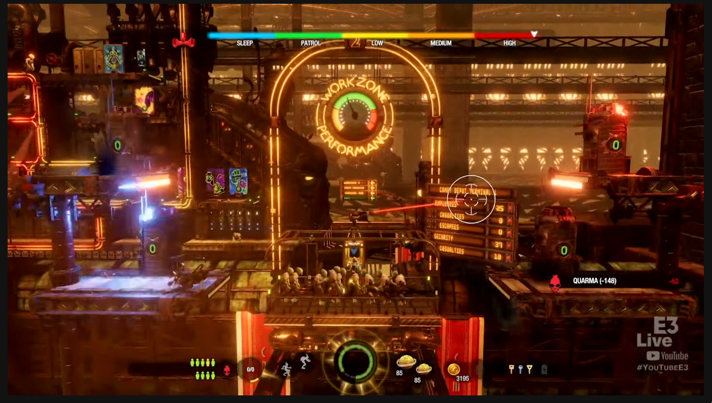

On June 9th Lorne Lanning took part in a short interview at E3, showcasing a bit more of Soulstorm's gameplay. I'd like to point out a few points of interest. As always, you can right click and select "View image" to see the pictures in their full size.
If you haven't seen the video yet, you can watch it here:
At the beginning of the video we can see Abe hanging from a Comet Depot (originally FeeCo Depot) train. Right before he jumps down the camera shows us the face of a Vykker. The community pointed out that the is very similar to Humphrey from Munch's Oddysee.
Considering the pose Abe lands in and the large sign showing directions, I believe it's safe to say that this cutscene is something that will play before each level you reach using the train, replacing the Bonewerkz, Slig Barracks and SoulStorm Brewery transitions.
The next picture showing gameplay gives us a lot to work with. We get to see a bit more of the level and also two of the new vending machines. One dispenses Jawbreakers the other chewing Gum. OWI has confirmed that Abe having over 3000 Moolah is not the norm, the amount was cheated in for the demo's sake, along with a much easier difficulty compared to what we'll be able to experience. We also see the "Workzone Performance" indicators again. I have asked the developers about it and it works in the following way:

Afterwards the screen changes and we see Abe's inventory. We see the following:
I've marked the items I'm not sure in with a question mark. A lot of these items have also appeared back in 2017 on the EGX showcase, however, we can also see some new ones. I've named the little white packet "bone dust", because the logo on it looks quite similar to the Bonewerkz logo.


The player then crafts a "Binding Breaker" using tape and jawbreakers. We've seen previously that Sligs hit with these are immobilized, but not killed.
 As we can see, each item has it's own "Recipes" section, which shows how many different kinds of items can be crafted using the currently selected one.
We then get to see more wending machines, one for the iconic SoulStorm Brew and the other I couldn't make much sense out of, but it looks something akin to a flame.
We also see how rubber bands can be added to jawbreakers, which make them bouncier. Also the new status screen shows us the number of Sligs alive and dead.
The UI shows us the number of followers, Abe's Quarma, what I believe to be "Chi" (this game's equivalent of Mana), status indicators for chanting and sneaking, Abe's health, primary and secondary weapons/tools, the amount of Moolah you have, a symbol I don't currently recognize and the keys Abe snatched or looted from the Sligs.

On the next scene we witness a fight between Abe and his Mudokons and the Slig security forces. Abe's pals use lethal force, which kills all the Sligs, lowering Abe's karma significantly which we can both see on the UI and on the right side. In the top left corner, there is a recycling machine, you can sell your empty bottles there and get some Moolah in return. In the bottom right, you can buy cans of "PoP" and "Blastos". Right next to the recycling machine we can see General Dripik's face, which likely serves the same purpose as Molluck's face did in New 'n' Tasty, that is being the checkpoint.
